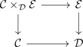
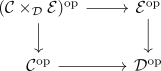
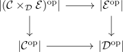

cartesian fibration with fiber transport as weak equivalence as realization fibration__
Proposition
Let $p: \mathcal{E} \rightarrow \mathcal{D}$ be a cartesian fibration. Then $p$ is a realization fibration.
Proof
dual to
Let

be a pullback in Cat infinity.
Then

is also a pullback (cf. autoequivalences in Cat infinity, equivalence of infinity categories preserves limits):
Hence we get

which evaluates as